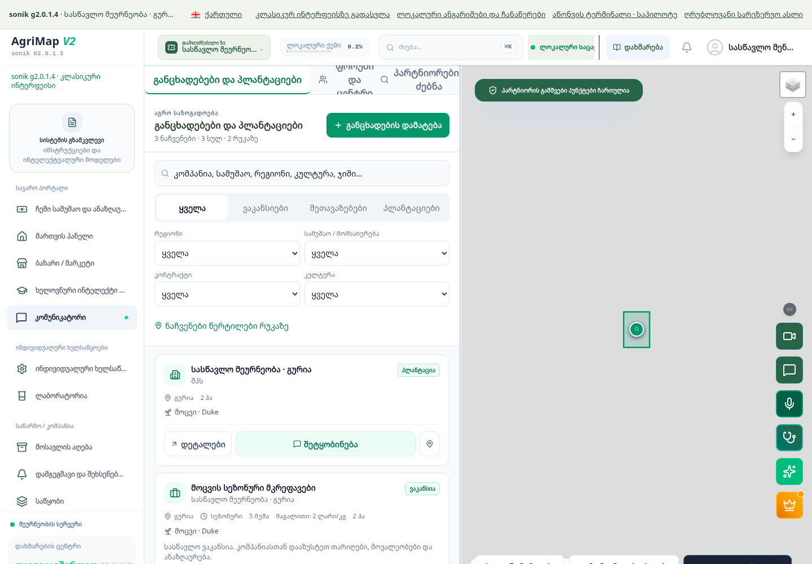
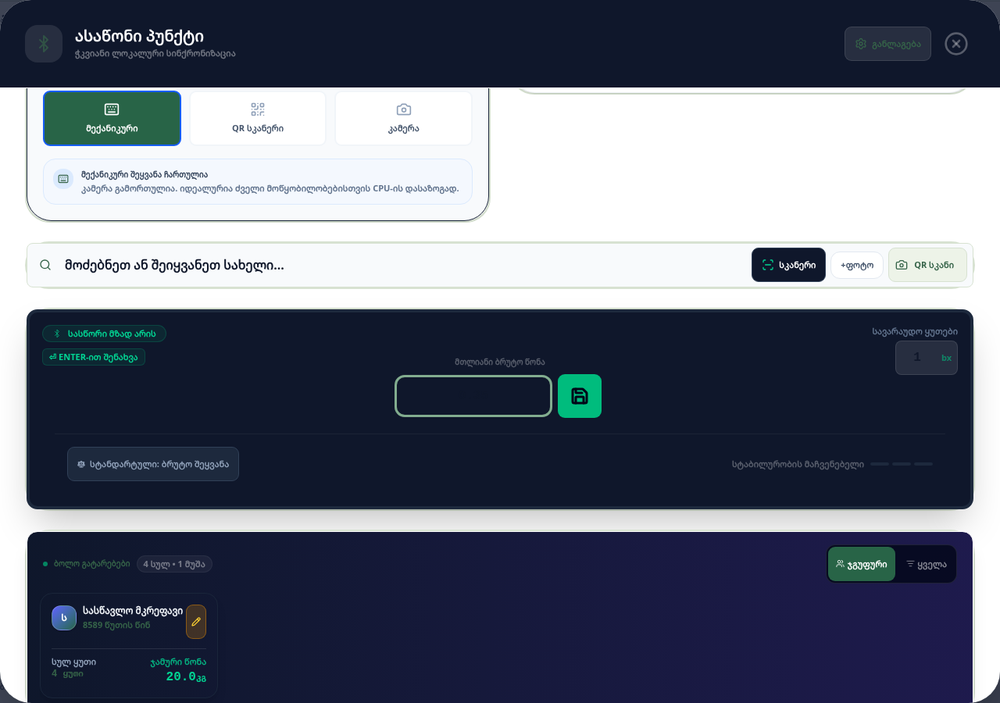
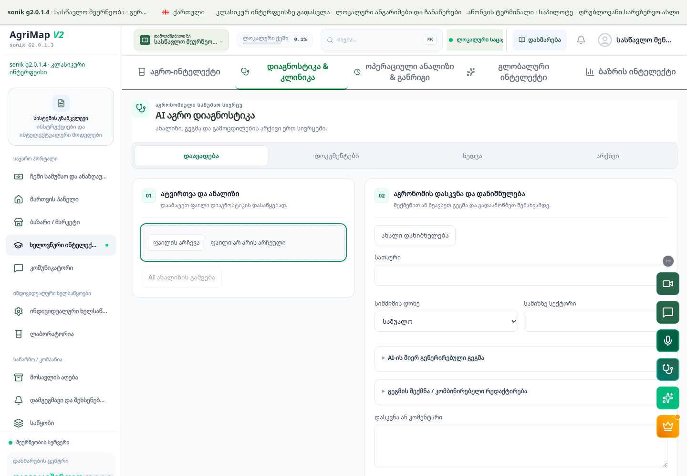
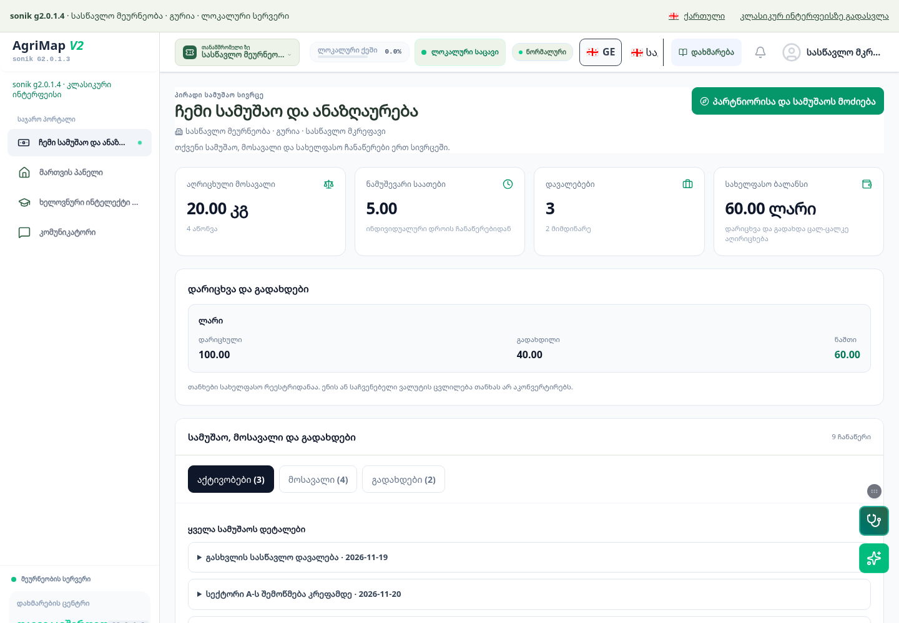

მუშახელი და აგრო-სერვისები
სამუშაო ძალისა და აგრო-სერვისების მოძიება და უკუკავშირი შეზღუდულია.
AGRIMAP PRO • აქსელერაციის პრეზენტაცია
სერვისები და მუშახელი, ეფექტური მართვა, კომუნიკაცია და ცოდნა, მოსავალი, საწყობი და გაყიდვები
AI & AI Agents
ანალიზი • დაგეგმვა • ავტომატიზაცია

პრობლემა
შედეგი: დაკარგული დრო, მაღალი ხარჯები და გამოუყენებელი შესაძლებლობები
სამუშაო ძალისა და აგრო-სერვისების მოძიება და უკუკავშირი შეზღუდულია.
სამუშაოები, ხარჯები და მარაგები სხვადასხვა ფაილებში იკარგება.
შუამავლები ამცირებენ მოგებას, ფასები და მოთხოვნა კი გაუმჭვირვალეა.
დაფანტული ცოდნა, განმეორებადი კითხვები და ინფორმაციის არათანაბარი წვდომა.
რატომ არის ეს მნიშვნელოვანი
გადაუმოწმებელი წონები და დავები დასწრებაზე.
საწყობის ხარჯვა საველე დავალებებთან კავშირის გარეშე.
რვეულების ხელით შეჯერება მოსავლის პიკურ სეზონზე.
წყარო: პრაქტიკული დაკვირვება და აუდიტი რეგიონის კომერციულ პლანტაციებში (75,925 კგ მოსავლისა და 441 მუშაკის მონაცემებზე).
რაოდენობრივი შედეგები — ავტორის მონაცემები; მეთოდოლოგიის დასაბუთება საჭიროა.
კონკურენტული გარემო
| ბიზნესის მთავარი საჭიროება | AgriMap Pro | ქაღალდი და Excel | სტანდარტული ERP (1C / SAP) | უცხოური აგრო-აპები |
|---|---|---|---|---|
| სასწორისა და მუშაკის NFC ბეიჯის სინქრონიზაცია | ✓ | ხელით | არ აქვს საველე UI | — |
| ოფლაინ ლოკალური სერვერი (LAN) ინტერნეტის გარეშე | ✓ | ✓ | რთული IT | მხოლოდ ონლაინ |
| ორმხრივი გამჭვირვალობა (მფლობელი + მუშაკი) | ✓ | — | — | — |
| მოდულური API ინტეგრაცია არსებულ ERP-ებთან | ✓ | — | ხისტი სისტემა | დახურული |
| ხელმისაწვდომი ფასი და ქართული ლოკალიზაცია | ✓ | ✓ | ძვირია | არაა ქართულად |
ავტორის შედარებითი მოდელი · კონკურენტების ვერსიები და ინტეგრაციების მზაობა გადასამოწმებელია.
როგორ ვაგვარებთ ამას
მუშაკებისა და ყუთების ფიქსაცია სასწორის სადგურზე ოფლაინ რეჟიმშიც.QR კოდებით და ჭკვიანი სასწორით
დარიცხული და გაცემული ხელფასების გამიჯვნა მუშაკის პირად კაბინეტში.
გადამყიდველის გარეშე გაყიდვა და მოთხოვნის ხედვა რეგიონებისა და ჯიშების მიხედვით.
იკვლევს, აანალიზებს, გეგმავს და ასრულებს ციფრულ ოპერაციებს ფერმერის ნაცვლად.

ავტონომიური აგენტები — განვითარების ხედვა; აპარატურისა და ოფლაინ რეჟიმის ფარგლები მოწმდება ინტეგრაციის მიხედვით.
სტრატეგიული პოზიციონირება
| კრიტერიუმი | ტრადიციული მოდელი | AgriMap Pro-ს ხედვა |
|---|---|---|
| მთავარი მიზანი | კომპანიის მართვა | ეკოსისტემის განვითარება |
| მომხმარებელი | მფლობელი და მენეჯერი | სექტორის ყველა მონაწილე |
| ცოდნა და კავშირი | გარე პლატფორმები | საერთო ცოდნის ბაზა და ჩატი |
| დასაქმება და ბაზარი | ცალკეული არხები | ინტეგრირებული B2B ბაზარი |
| განვითარება | ფიქსირებული ფუნქციები | მომხმარებელთა უკუკავშირი |
| AI ინტელექტი | ცალკეული ამოცანები | ცოდნისა და პროცესების ბმა |
ერთი პლანტაცია — იზოლირებული შიდა პროცესების ოპტიმიზაცია.
მთლიანი სექტორის მონაწილეების დაკავშირება და განვითარება.
ცოდნა და ავტომატიზაცია
პროფესიული სივრცე, რომელიც ჩატის ნაცვლად ქმნის სტრუქტურირებულ აგრო-ცოდნას.
იკვლევს, აანალიზებს, გეგმავს და ასრულებს ციფრულ სამუშაოებს; ფერმერს კი მხოლოდ მზა შედეგს აცნობს.

Knowledge Hub და ავტონომიური ციფრული შესრულება — განვითარების ხედვა.
მომხმარებელთა სეგმენტაცია
მაღალი სეზონური ხარჯები, არ აქვთ ERP და გადაწყვეტილებას იღებენ სწრაფად.
სასწორის,IOT სენსორებისა და LoRaWAN მოდულების ინტეგრაცია მათ არსებულ ERP სისტემებთან.
უფასო პაკეტი ქმნის სანდო მუშახელისა და რეგიონული მიწოდების ბაზას.
ბაზრის მოცულობა
8.1 მლნ ₾ წლიური SaaS პოტენციალი საქართველოში • მასშტაბირებადი 45,000+ ბაღზე რეგიონში
ბაზრის შეფასება — ავტორის სცენარი; ფართობის კატეგორია და რეგიონული წყარო დასაზუსტებელია.
ბიზნეს მოდელი
მარტივი რეგისტრაცია მცირე ფერმერებისთვის, მუშაკებისა და აგრონომებისთვის.
1,800 ₾ წელიწადში თითო მეურნეობაზე (3+ ჰა) AI აგენტებისა და დიაგნოსტიკის ჩათვლით.
ინდივიდუალური API ინტეგრაცია და LoRaWAN ბეიჯების/სასწორების გამართვა.

ფასები — შემოთავაზებული მოდელი; ERP კონექტორები და AI ავტომატიზაციის ფარგლები განვითარების გეგმასთან მოწმდება.
პრაქტიკული შედეგები • LIVE TRACTION
ოპერაციული მაჩვენებლები მოწოდებულია ავტორის მიერ; დამოუკიდებელი მონაცემთა ამონაწერი არ არის დამატებული.
ბაზარზე გასვლა და სამოქმედო გეგმა
75.9 ტონა მოცვის აწონვა, 441 მუშაკის ბაზა და ოფლაინ LAN სერვერი.
წინასასეზონო ჩართვა გურია-სამეგრელოში მოცვის კრეფის პიკისთვის.
180,000 ₾ წლიური შემოსავლის ტემპი და სამაცივრე მეურნეობების მიბმა.
კონექტორები მსხვილი ჰოლდინგებისთვის და პირდაპირი საბითუმო ვაჭრობა.
2027–2028 წლების მაჩვენებლები მიზნობრივი გეგმაა, არა მიღწეული შემოსავალი ან კლიენტების რაოდენობა.
გუნდი და საზოგადოებაზე დაფუძნებული განვითარება
ყოველი ახალი მომხმარებლის გამოცდილება პროდუქტის გაუმჯობესების წყაროა.
გარდაქმნის საველე საჭიროებებს მუშა პროგრამულ მოდულებად.
IT სისტემების ინჟინერია, ქლაუდ სინქრონიზაცია და უსაფრთხოება.
პლანტაციის მფლობელი და საბანკო/ფინანსური მართვის გამოცდილება.
პლანტაციების მართვის 6-წლიანი გამოცდილება; ამოწმებს პროცესებს ადგილზე.
აქსელერაციის მხარდაჭერა
Unit Economics: 25,000 ₾ ინვესტიცია → 100 გადამხდელი ფერმა (CAC ~250 ₾ • LTV 1,800 ₾/წელში — 7.2x უკუგება)
ავტორის ფინანსური სცენარი · LTV და უკუგების ტერმინები დასაზუსტებელია; გრანტი არ არის მიღებულ დაფინანსებად წარმოდგენილი.
AGRIMAP PRO / OUR FUTURE
ჩვენი მიზანია უკეთ ორგანიზებული სოფლის მეურნეობა.
სადაც ფერმერს აქვს ცოდნა და არჩევანი.
მუშახელს — შესაძლებლობა და გამჭვირვალე ანაზღაურება.
მყიდველს — სანდო ინფორმაცია.
ხოლო ტექნოლოგია თითოეული მათგანის განვითარებას ემსახურება.